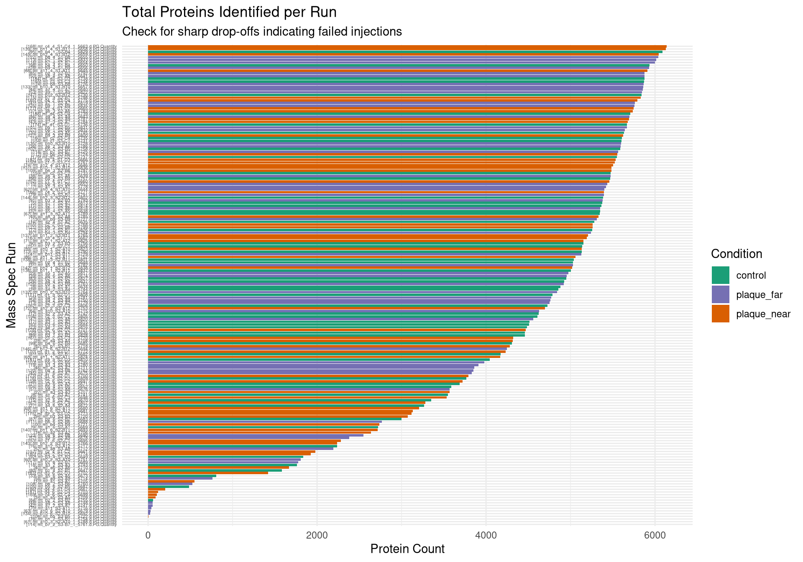
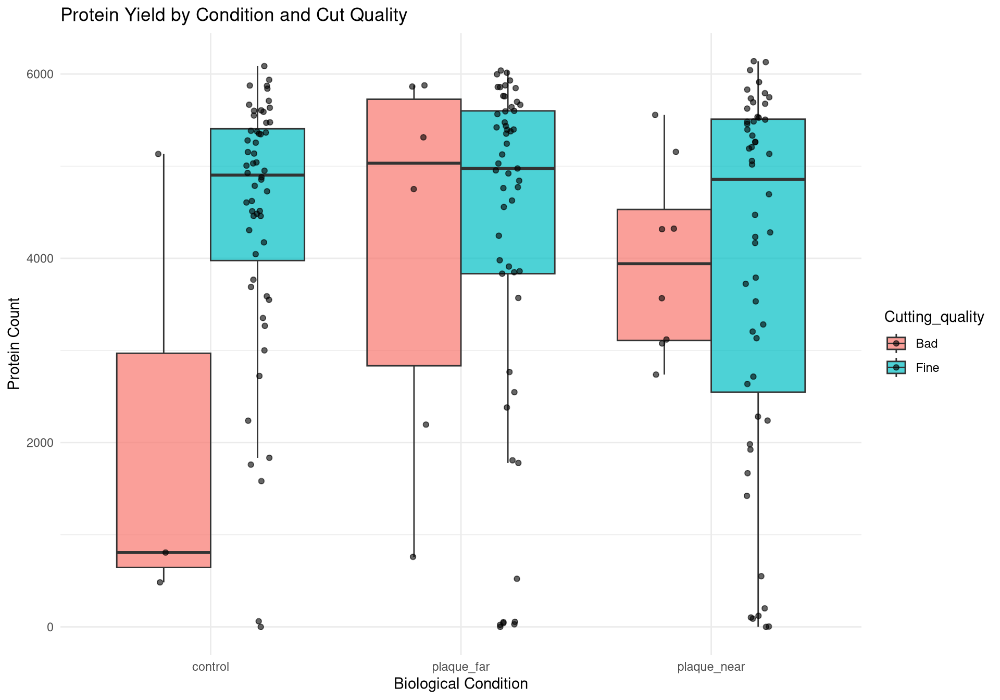
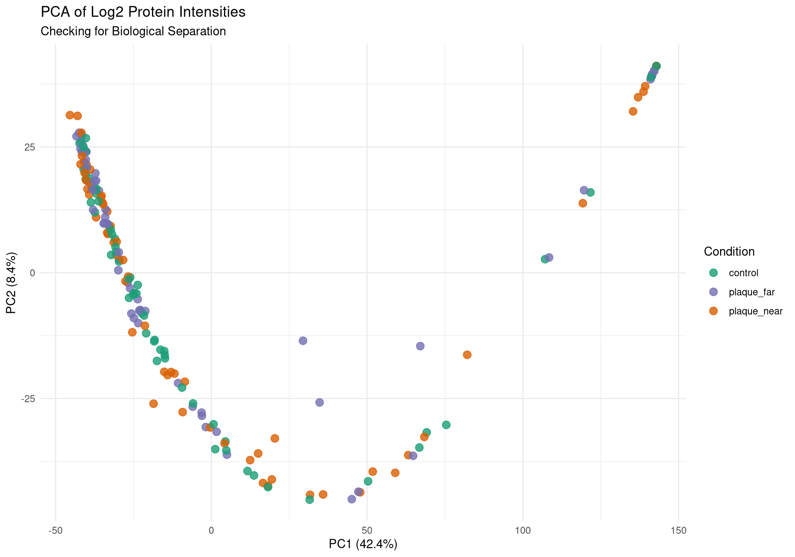
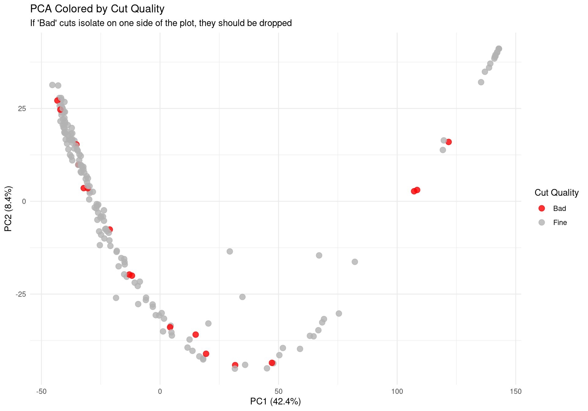
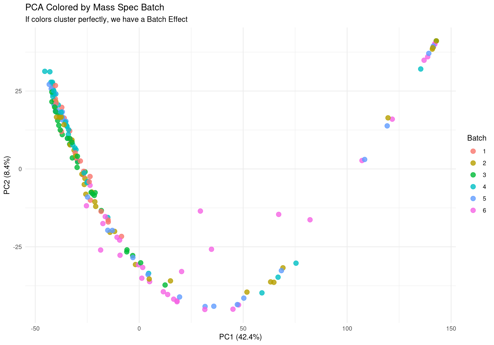
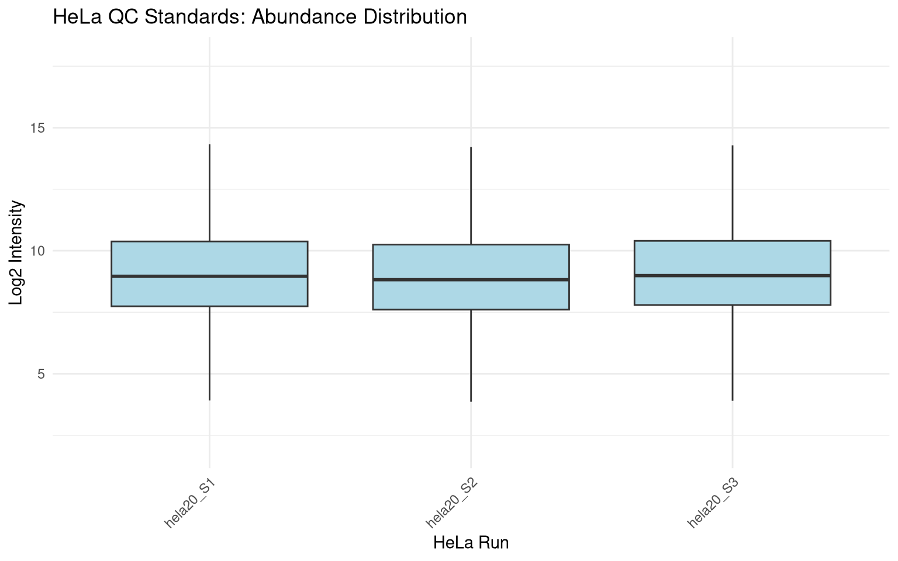
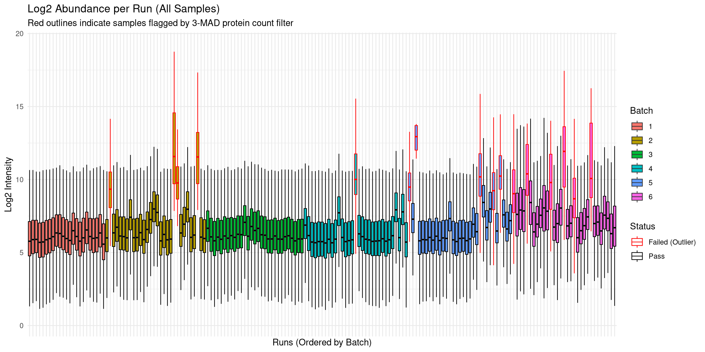
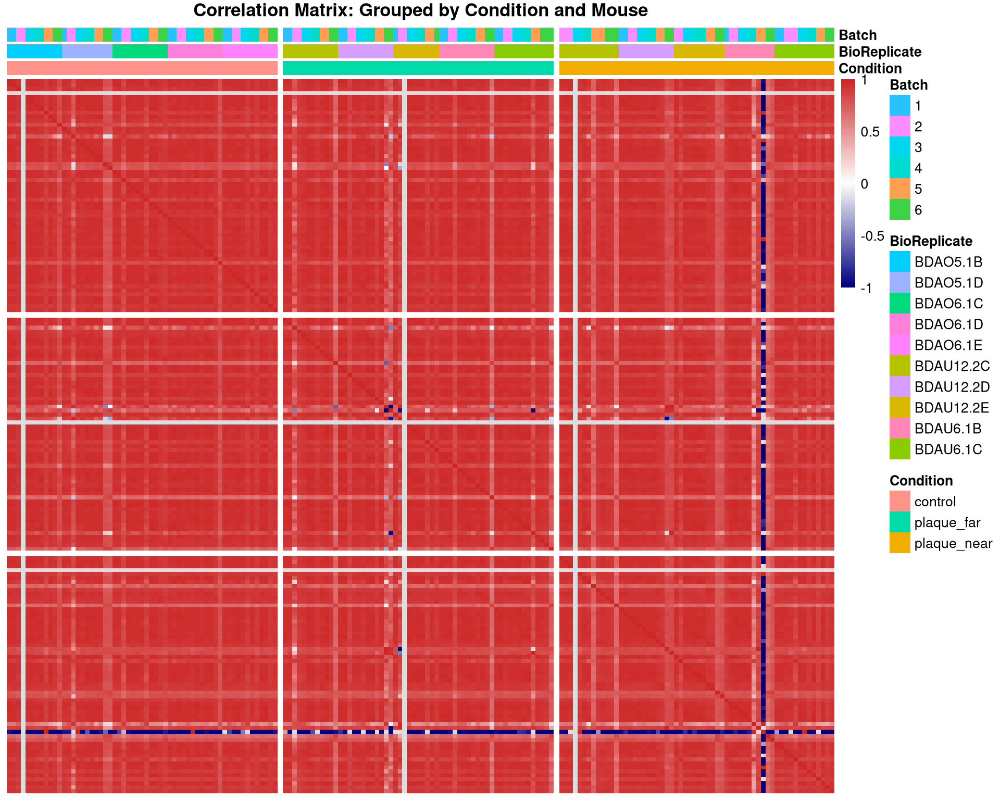
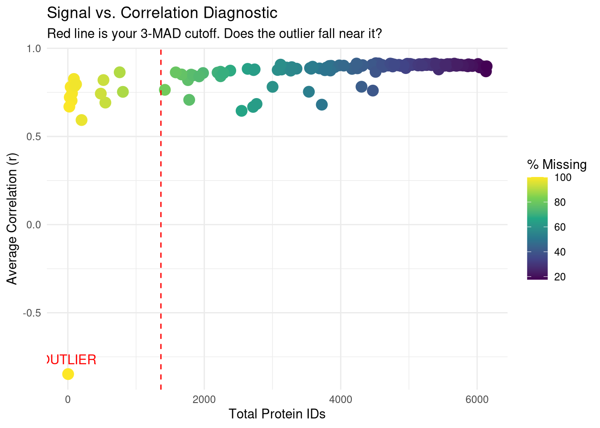
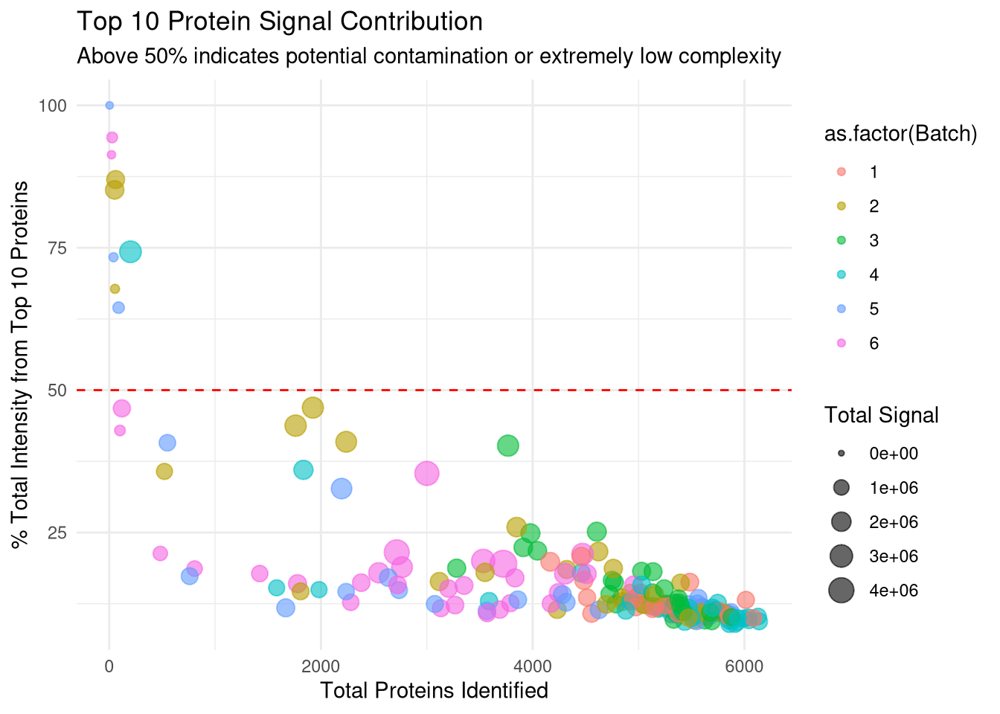

meta <-fread(file.path(raw_dir, "LCM_2025_metadata.csv"))spec_raw <-fread(file.path(raw_dir, "20260215_204256_hela20_Report.tsv"))meta
Clean metadata
Remove hidden spaces etc.
Code
meta_cleaned <- meta %>%mutate(# 1. Trim hidden spaces and force everything to lowercase firstCondition =tolower(str_trim(Condition)),# 2. Map all variations directly to your snake_case targetsCondition =case_when( Condition %in%c("close", "plaque near") ~"plaque_near", Condition =="plaque far"~"plaque_far", Condition =="control"~"control",TRUE~ Condition # Keeps anything else exactly as is, so you can spot typos ),# 3. Handle the Mouse column (use backticks if it still has the trailing space from the raw CSV)BioReplicate =str_trim(`Mouse`) ) %>%as.data.table()meta_cleaned
Check number of columns
Code
all_cols <-colnames(spec_raw)length(all_cols)
[1] 191
Code
quant_cols <-grep("PG\\.Quantity", all_cols, value =TRUE)length(quant_cols)
[1] 188
Code
run_cols <-grep("hela", quant_cols, value =TRUE, invert =TRUE)length(run_cols)
If you look at run[160], the file name is mt_c2_S3-C4_1_5735.
The first part of the name (mt_c2) is what was manually typed into the sequence table.
The middle part of the name (-C4_1) is the physical autosampler well that the mass spec actually drew the sample from.
Look at the injection counter at the very end of the files. Run [159] was injected at time 5733 (from well C2). The very next sample, run [160], was injected at time 5735 (from well C4).
Code
grep("S3.*[Cc][24]", colnames(spec_raw), value =TRUE)
run_mapping <- run_mapping %>%mutate(# 1. MACHINE TRUTH WELL: Extract the uppercase well between the hyphen and underscore# e.g., matches "-C4_" and pulls out "C4"Chip_location =str_match(Run, "-([A-Z][0-9]+)_")[, 2],# 2. BATCH EXTRACTION: Keep this the same (pulls the number/S3 after the first well)Batch_raw =str_match(tolower(Run), "mt_[a-z0-9]+_([0-9]+|s3)")[, 2],# 3. FIX BATCH: Swap "s3" for "5" and convert to numericBatch_raw_fixed =str_replace(Batch_raw, "s3", "5"),Batch =as.numeric(Batch_raw_fixed) ) %>%# Drop the temporary columnsselect(-Batch_raw, -Batch_raw_fixed) %>%as.data.table()# Quick sanity check for the problem file:print(run_mapping[grep("5735", Run)])
meta_mapped <-merge( meta_cleaned, run_mapping, by =c("Chip_location", "Batch"), all.x =TRUE)missing_mapping <- meta_mapped[is.na(Run)]if(nrow(missing_mapping) >0) {cat("Warning: The following samples are missing from the Spectronaut columns:\n")print(missing_mapping[, .(BioReplicate, Chip_location, Batch)])} else {cat("All samples successfully mapped!\n")}
All samples successfully mapped!
Code
meta_mapped
Check that all samples were correctly merged
Code
missing_mapping <- meta_mapped[is.na(Run)]if(nrow(missing_mapping) >0) {cat("Warning: The following samples are missing from the Spectronaut columns:\n")print(missing_mapping[, .(BioReplicate, Chip_location, Batch)])} else {cat("All metadata samples successfully mapped!\n")}
All metadata samples successfully mapped!
Check for blank samples
These are removed from analysis - but could be worth referring to ?
Code
extra_runs <- run_mapping[!Run %in% meta_mapped$Run]cat("These are the", nrow(extra_runs), "mass spec runs that were dropped because they weren't in the metadata:\n")
These are the 6 mass spec runs that were dropped because they weren't in the metadata:
Stores metadata as qc_data, after including number of counts and run name.
Code
#Calculates ID counts from wide format# Extract just the valid run columns that successfully mapped to a mousevalid_runs <- meta_mapped[!is.na(Run)]$Run# Subset the raw data to only these quantitative columnsquant_data <- spec_raw[, ..valid_runs]# A protein is "identified" if it has a non-NA value greater than 0protein_counts <-colSums(!is.na(quant_data) & quant_data >0, na.rm =TRUE)# Create the summary tableqc_counts <-data.table(Run =names(protein_counts),Protein_Count = protein_counts)# Merge the biological metadata with our technical countsqc_data <-merge(qc_counts, meta_mapped, by ="Run", all.x =TRUE)# Print a quick summary to the consolesummary(qc_data$Protein_Count)
Min. 1st Qu. Median Mean 3rd Qu. Max.
0 3271 4900 4166 5500 6139
Run PCA
Data already wide. - First need to log-transform it - handle the missing values - transpose it so runs are rows.
Code
cat("Preparing data for PCA...\n")
Preparing data for PCA...
Code
# Convert the subsetted data to a numeric matrixpca_matrix <-as.matrix(quant_data)# Log2 transform the intensities (adding +1 to avoid log2(0))pca_matrix_log <-log2(pca_matrix +1)# Transpose it so Rows = Runs, Columns = Proteins (prcomp expects this)pca_matrix_log_t <-t(pca_matrix_log)# 1. IMPUTE FIRST: Fill missing values (NAs or 0s) with a tiny noise floornoise_floor <-min(pca_matrix_log_t[pca_matrix_log_t >0], na.rm =TRUE) /2pca_matrix_log_t[is.na(pca_matrix_log_t) | pca_matrix_log_t ==0] <- noise_floor# 2. FILTER SECOND: Now remove any proteins that have zero variance # (e.g., proteins that were all NAs and are now just a flat line of noise_floor)valid_cols <-apply(pca_matrix_log_t, 2, var) >0pca_matrix_log_t <- pca_matrix_log_t[, valid_cols]cat("Running prcomp...\n")
Running prcomp...
Code
pca_res <-prcomp(pca_matrix_log_t, center =TRUE, scale. =TRUE)# Extract coordinates and merge with metadatapca_df <-as.data.frame(pca_res$x)pca_df$Run <-rownames(pca_df)pca_df <-merge(pca_df, meta_mapped, by ="Run", all.x =TRUE)# Calculate % variance explained by PC1 and PC2variance_explained <-round(100* pca_res$sdev^2/sum(pca_res$sdev^2), 1)
Generate PDF report of QC metrics
Bar chart of total proteins identified by Run
Bar chart to compare protein quality by condition and cut quality
PCAs coloured by:
Condition
Cut
Batch
Code
# ---------------------------------------------------------# Plot 1: Protein Count per Run# ---------------------------------------------------------p1 <-ggplot(qc_data, aes(x =reorder(Run, Protein_Count), y = Protein_Count, fill = Condition)) +geom_bar(stat ="identity") +theme_minimal() +coord_flip() +scale_fill_manual(values =c("control"="#1b9e77", "plaque_near"="#d95f02", "plaque_far"="#7570b3")) +labs(title ="Total Proteins Identified per Run",subtitle ="Check for sharp drop-offs indicating failed injections",x ="Mass Spec Run", y ="Protein Count") +theme(axis.text.y =element_text(size =4)) # ---------------------------------------------------------# Plot 2: Yield by Condition & Cutting Quality# ---------------------------------------------------------p2 <-ggplot(qc_data, aes(x = Condition, y = Protein_Count, fill = Cutting_quality)) +geom_boxplot(outlier.shape =NA, alpha =0.7, position =position_dodge(width =0.75)) +geom_point(position =position_jitterdodge(jitter.width =0.2, dodge.width =0.75), alpha =0.6, size =1.5) +theme_minimal() +labs(title ="Protein Yield by Condition and Cut Quality",x ="Biological Condition", y ="Protein Count")# ---------------------------------------------------------# Plot 3: PCA (Color by Condition)# ---------------------------------------------------------p3 <-ggplot(pca_df, aes(x = PC1, y = PC2, color = Condition)) +geom_point(size =3, alpha =0.8) +theme_minimal() +scale_color_manual(values =c("control"="#1b9e77", "plaque_near"="#d95f02", "plaque_far"="#7570b3")) +labs(title ="PCA of Log2 Protein Intensities",subtitle ="Checking for Biological Separation",x =paste0("PC1 (", variance_explained[1], "%)"),y =paste0("PC2 (", variance_explained[2], "%)")) +theme(legend.position ="right")# ---------------------------------------------------------# Plot 4: PCA (Color by Cutting Quality) <--- NEW PLOT# ---------------------------------------------------------p4 <-ggplot(pca_df, aes(x = PC1, y = PC2, color = Cutting_quality)) +geom_point(size =3, alpha =0.8) +theme_minimal() +# Using distinct colors so it's easy to spot the "Bad" onesscale_color_manual(values =c("Fine"="gray70", "Bad"="red")) +labs(title ="PCA Colored by Cut Quality",subtitle ="If 'Bad' cuts isolate on one side of the plot, they should be dropped",x =paste0("PC1 (", variance_explained[1], "%)"),y =paste0("PC2 (", variance_explained[2], "%)"),color ="Cut Quality") +theme(legend.position ="right")# ---------------------------------------------------------# Plot 5: PCA (Color by Batch)# ---------------------------------------------------------p5 <-ggplot(pca_df, aes(x = PC1, y = PC2, color =as.factor(Batch))) +geom_point(size =3, alpha =0.8) +theme_minimal() +labs(title ="PCA Colored by Mass Spec Batch",subtitle ="If colors cluster perfectly, we have a Batch Effect",x =paste0("PC1 (", variance_explained[1], "%)"),y =paste0("PC2 (", variance_explained[2], "%)"),color ="Batch")# ---------------------------------------------------------# 2. Save to PDF (The background export)# ---------------------------------------------------------pdf_path <-file.path(results_dir, "Initial_QC_Report.pdf")cat("Generating PDF report at:", pdf_path, "\n")
Generating PDF report at: /nemo/lab/destrooperb/home/shared/zanettc/millie_proteomics/results/run1/Initial_QC_Report.pdf
# ---------------------------------------------------------# 3. Render Inline (For the Quarto viewer)# ---------------------------------------------------------cat("Displaying plots inline for review...\n")
Displaying plots inline for review...
Code
print(p1)

Code
print(p2)

Code
print(p3)

Code
print(p4)

Code
print(p5)

MAD outlier detection
Code here identifies samples that have 3 MAD below median protein counts.
Stores samples to drop in failed_runs variable.
Code
cat("Calculating MAD thresholds for Protein Counts...\n")
Calculating MAD thresholds for Protein Counts...
Code
# Calculate Median and MADmed_count <-median(qc_data$Protein_Count, na.rm =TRUE)# R's mad() function automatically applies the 1.4826 scaling factor to approximate SDmad_count <-mad(qc_data$Protein_Count, na.rm =TRUE) # Set the cutoff at 3 MADs below the medianmad_cutoff <- med_count - (3* mad_count)cat("Median Protein Count:", round(med_count), "\n")
Median Protein Count: 4900
Code
cat("MAD:", round(mad_count), "\n")
MAD: 1179
Code
cat("Dropping any run below:", round(mad_cutoff), "proteins\n")
Dropping any run below: 1364 proteins
Code
# Identify the exact runs that failedfailed_runs <- qc_data %>%filter(Protein_Count < mad_cutoff) %>%pull(Run)if(length(failed_runs) >0) {cat("\nWARNING: Found", length(failed_runs), "failed runs to drop:\n")print(failed_runs)} else {cat("\nExcellent: No runs fell below the 3 MAD threshold!\n")}
Warning: Removed 7651 rows containing non-finite outside the scale range
(`stat_boxplot()`).

Abundance Distributions
Plotted log2intensities against each run (grouped by batch).
Batch 6 has a higher number of outliers than other batches.
Could be that these samples were thicker than others?
This deviation can be fixed by median normalisation.
Code
# Prepare full quantitative datafull_quant_log <-log2(as.matrix(quant_data) +1)full_quant_log[full_quant_log ==0] <-NA# Merge with metadata and flag failures for the plotabund_full <-as.data.frame(full_quant_log) %>%mutate(Protein =row_number()) %>%pivot_longer(-Protein, names_to ="Run", values_to ="Log2_Intensity") %>%drop_na() %>%left_join(qc_data, by ="Run") %>%mutate(Status =ifelse(Run %in% failed_runs, "Failed (Outlier)", "Pass"))p_abund <-ggplot(abund_full, aes(x =reorder(Run, Batch), y = Log2_Intensity, fill =as.factor(Batch))) +geom_boxplot(aes(color = Status), outlier.shape =NA, lwd =0.4) +scale_color_manual(values =c("Pass"="black", "Failed (Outlier)"="red")) +theme_minimal() +labs(title ="Log2 Abundance per Run (All Samples)",subtitle ="Red outlines indicate samples flagged by 3-MAD protein count filter",x ="Runs (Ordered by Batch)", y ="Log2 Intensity", fill ="Batch") +theme(axis.text.x =element_blank())print(p_abund)

Check correlations between samples
Code
#log2 transform matrix of intensities as pearson works best on log scalequant_mat_log <-log2(as.matrix(quant_data) +1)quant_mat_log[quant_mat_log ==0] <-NA#ensure zeroes don't artificially boost correlation#create correlation matrixcor_mat <-cor(quant_mat_log, use ="pairwise.complete.obs")# prepare the sorted metadata# creating order for axesmeta_sorted <- meta_mapped %>%arrange(Condition, BioReplicate, Batch) %>%as.data.frame()#Reorder the correlation matrix to match this biological order# Run as indexsorted_runs <- meta_sorted$Runcor_mat_sorted <- cor_mat[sorted_runs, sorted_runs]#setup the annotation dataframeanno_df <- meta_sorted %>%select(Run, Condition, BioReplicate, Batch) %>%mutate(Batch =as.factor(Batch)) %>%as.data.frame()rownames(anno_df) <- anno_df$Runanno_df$Run <-NULL#Plot the Heatmappheatmap(cor_mat_sorted, main ="Correlation Matrix: Grouped by Condition and Mouse",annotation_col = anno_df,cluster_rows =FALSE, # DO NOT cluster - keep our manual ordercluster_cols =FALSE, # DO NOT cluster - keep our manual ordershow_rownames =FALSE, show_colnames =FALSE,color =colorRampPalette(c("navy", "white", "firebrick3"))(100),# Add gaps to visually separate the Conditionsgaps_col =which(diff(as.numeric(as.factor(meta_sorted$Condition))) !=0),gaps_row =which(diff(as.numeric(as.factor(meta_sorted$Condition))) !=0))

Identify outlier sample
Sample has 4 proteins total detected - below 3 MAD cut-off, so will be removed.
Code
# 1. Calculate Missingness and ID countsqc_diagnostics <-data.table(Run =colnames(quant_data),Protein_Count =colSums(!is.na(quant_data) & quant_data >0),NA_Percent =colMeans(is.na(quant_data) | quant_data ==0) *100,Avg_Correlation =rowMeans(cor_mat, na.rm =TRUE))# 2. Identify the outlier (lowest correlation)outlier_id <- qc_diagnostics[which.min(Avg_Correlation), Run]# 3. Print the diagnostic for the outliercat("--- Diagnostic for Heatmap Outlier ---\n")
# 4. Visualize the relationshipp_diag <-ggplot(qc_diagnostics, aes(x = Protein_Count, y = Avg_Correlation)) +geom_point(aes(color = NA_Percent), size =4) +geom_vline(xintercept = mad_cutoff, linetype ="dashed", color ="red") +geom_text(aes(label =ifelse(Run == outlier_id, "OUTLIER", "")), vjust =-1, color ="red") +scale_color_viridis_c(name ="% Missing") +theme_minimal() +labs(title ="Signal vs. Correlation Diagnostic",subtitle ="Red line is your 3-MAD cutoff. Does the outlier fall near it?",x ="Total Protein IDs", y ="Average Correlation (r)")print(p_diag)
Warning: Removed 3 rows containing missing values or values outside the scale range
(`geom_point()`).
Warning: Removed 3 rows containing missing values or values outside the scale range
(`geom_text()`).

Check for other samples which have lower correlations
All other samples seem to have decent correlations, which don’t warrant removal.
Code
qc_data$Mean_Cor <-rowMeans(cor_mat, na.rm =TRUE)# 2. Identify 'White Line' candidates # (Adjust the range if your scale's 'white' is centered differently, # but usually it's around 0.3 - 0.7 in this specific color map)white_line_samples <- qc_data %>%filter(Mean_Cor <0.7) %>%select(Run, Condition, Batch, Protein_Count, Mean_Cor)# 3. Compare them to the 'Red' high-performerscat("Summary of potential 'White Line' samples:\n")
# 4. Check for Batch bias in these linestable(white_line_samples$Batch)
1 2 3 4
2 2 2 2
Check for contaminants
Check for cumulative intensity of 10 most abundant proteins for each sample, and divide by total intensity for that run. Idcentifies low complexity samples where just a few proteins dominate signal. Again this shows that samples below the 3 MAD cut-off will be discarded.
Code
# 1. Ensure we have the raw intensities (non-log) for ratio calculations# We use quant_data which was created from spec_raw earlierraw_matrix <-as.matrix(quant_data)# 2. Function to calculate % signal from Top N proteinscalc_top_n_pct <-function(column, n =10) { sorted_vals <-sort(column, decreasing =TRUE, na.last =TRUE) top_n_sum <-sum(sorted_vals[1:n], na.rm =TRUE) total_sum <-sum(column, na.rm =TRUE)return((top_n_sum / total_sum) *100)}# 2. Apply to all runs to create the metricstop10_metrics <-apply(as.matrix(quant_data), 2, calc_top_n_pct, n =10)# 3. Add the missing column to qc_dataqc_data[, Top10_Percent := top10_metrics[Run]]# 4. Identify suspect runs (Threshold > 50%)contaminant_suspects <- qc_data[Top10_Percent >50, .(Run, Condition, Batch, Protein_Count, Top10_Percent)]cat("Samples where the Top 10 proteins account for >50% of signal:\n")
Samples where the Top 10 proteins account for >50% of signal:
Check for what specific proteins are contributing to these mid zone proteins
Gemini output of these protein:
A2AQ07: Plectin (Mouse) – A giant structural protein that links the cytoskeleton to the plasma membrane. It is extremely common in dense tissue cuts.
P02535: Keratin, type I cytoskeletal 10 (Mouse).
P60710: Actin, cytoplasmic 1 (Mouse).
P68372: Tubulin beta-4B chain (Mouse).
Q5U405: Transmembrane protease serine 13 (Mouse).
Q9QWL7: Keratin, type I cytoskeletal 17 (Mouse).
Code
# 1. Calculate Total Raw Intensity per Run# We use the raw quant_data (pre-log) to see the physical signal magnitudetotal_intensities <-colSums(quant_data, na.rm =TRUE)# 2. Add Total_Intensity to your existing qc_data# Match the names of the colSums output to the Run column in qc_dataqc_data[, Total_Intensity := total_intensities[Run]]# 3. Create the Diagnostic Plotp_intensity_vs_count <-ggplot(qc_data, aes(x = Protein_Count, y = Total_Intensity)) +# Use log10 scale for Y if intensities vary by orders of magnitudescale_y_log10() +geom_point(aes(color =as.factor(Batch)), size =3, alpha =0.7) +# Add the 3-MAD failure line for contextgeom_vline(xintercept = mad_cutoff, linetype ="dashed", color ="red") +# Label the outlier specificallygeom_text(aes(label =ifelse(Run == outlier_id, "Outlier", "")), vjust =-1, color ="darkred", fontface ="bold") +theme_minimal() +scale_color_brewer(palette ="Set1") +labs(title ="Diagnostic: Protein IDs vs. Total Signal",subtitle ="Checking for high-intensity contaminants or low-yield runs",x ="Total Proteins IDs",y ="Total Intensity (Log10 Scale)",color ="Batch")print(p_intensity_vs_count)
Top 10 protein signal contribution against total number of proteins identified.
Code
p_top10 <-ggplot(qc_data, aes(x = Protein_Count, y = Top10_Percent)) +geom_point(aes(color =as.factor(Batch), size = Total_Intensity), alpha =0.6) +geom_hline(yintercept =50, linetype ="dashed", color ="red") +# Label samples that cross the 50% thresholdgeom_text(aes(label =ifelse(Top10_Percent >50, Run, "")), vjust =-1, size =3, check_overlap =TRUE) +theme_minimal() +labs(title ="Top 10 Protein Signal Contribution",subtitle ="Above 50% indicates potential contamination or extremely low complexity",x ="Total Proteins Identified",y ="% Total Intensity from Top 10 Proteins",size ="Total Signal")print(p_top10)
Warning: Removed 3 rows containing missing values or values outside the scale range
(`geom_point()`).
Warning: Removed 3 rows containing missing values or values outside the scale range
(`geom_text()`).

Code
mid_zone_runs <- qc_data[Top10_Percent >30& Top10_Percent <50, Run]# Get the top protein ID for each of these runstop_id_check <-apply(quant_data[, ..mid_zone_runs], 2, function(x) { row_idx <-which.max(x)# spec_raw[[1]] pulls the first column (usually PG.ProteinGroups or similar)return(spec_raw[[1]][row_idx]) })print(table(top_id_check))